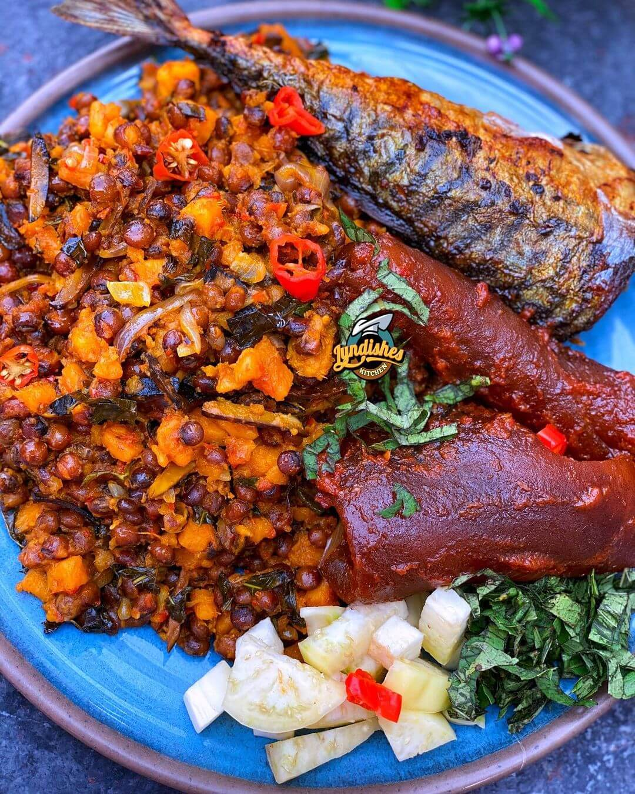

Fio Fio Recipe

A Plate of Fio Fio
Fio-Fio Recipe
Ingredients
- 3 milks cups of palm oil
- Handful of scent leaf
- 4 onion balls
- 2 stock/seasoning cubes
- 12 pieces fresh pepper
- 4 handfuls of ukpaka
- Salt
- Fish
- Select the pigeon peas like you would.
- Pour the washed fio fio into a pot and cover with water. cook for 30 minutes, wash and then return to the
pot for another round of cooking.
- Move to the coco-yam. Pour the coco-yam into a bowl of water and allow to soak for at least 10 minutes.
- Then wash properly to remove all traces of sand and drain out the water.
- Tie them bit by bit with the nylon and put inside the already cooking pot where the pigeon peas are. Let
this cook for about 30 minutes
- Remove the coco-yam from the pot and allow the pigeon peas
- Drain the water from the peas, untie the coco-yam and mix together
- Heat the oil in a separate pot or frying pan for about 3 minutes
- In the oil, add the chopped onions, pepper, ukpaka, seasoning, scent leaf, salt to taste, and allow it cook
for 10 minutes
- Mix the already prepared sauce with the pigeon peas and coco-yam.